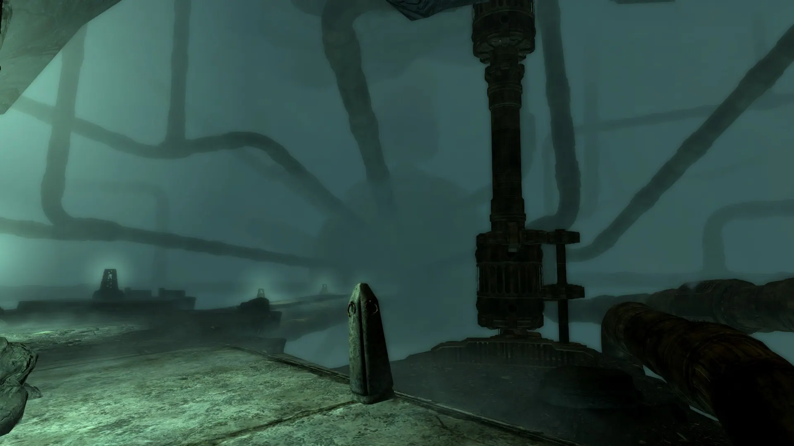

Skyrim: Lordbound
A DLC-sized Skyrim expansion: senior quest and narrative design, world building and level design.
- Studio
- Lordbound team (~20 developers)
- Platform
- PC · Skyrim mod
- Role
- Senior Quest & Narrative Designer · World & Level Designer
- When
- Jan 2015 – Feb 2019
Lordbound is a DLC-sized modification for The Elder Scrolls V: Skyrim, built by an international team of around 20 hobbyists, modders and professional developers.
It adds 3 square kilometres of new land and three faction-based storylines about the war in the valley, plus plenty of side stories. It's a choice-driven experience: players' past choices in Skyrim affect how NPCs react, questing is freeform, and their actions ultimately decide the fate of the valley, for better or much worse.
As one of the core quest designers and feature owners, and as a world builder and level designer, I took core gameplay and story areas from concept to completion. My work touched every area of Bethesda's Creation Kit, from art pipelines and dialogue trees to gameplay scripting and systems like weather and AI.
Downloadable media and project files available on request.
Video


Screens & key art
Quest design
I was responsible for the direction, writing and implementation of an entire faction quest branch with multiple story resolutions, including the background and dialogue for its characters.
That included extensive in-engine scripting of combat encounters, gameplay moments, unique boss fights, mechanics and quest logic, as well as supporting NPCs in towns and dungeons who make the world feel lived in, with their own opinions on what's happening around them.
I designed, wrote and implemented 16 main quests, each around an hour of gameplay, and wrote backgrounds and dialogue for 67 unique characters.
Our quest design process
- Plot the big beats and key moments for the overall narrative of the questline or faction chain.
- Decide how this quest delivers on its beat: the feeling it should evoke or the information it should reveal. That's the core the quest is built around.
- Plan the high-level narrative and gameplay beats and flow, and iterate with the team.
- Build a 'skeleton' quest structure with planned stages and deliverables.
- Write the NPC dialogue that delivers those beats.
- Implement the quest structure with stages, objectives and dialogue.
- Add dialogue conditions and scripting to advance stages and complete objectives.
- Implement logic triggers and fully script the more elaborate gameplay and scenes.
- Test, iterate and polish!
World & level design
I built many of Lordbound's core locations and dungeons, including several major towns and quest hubs, quest set-piece locations and dungeon layouts.
Early in world development I shaped the layouts and geography of many regions and developed the mod's weather system.
Every location was designed around both gameplay and narrative from the start, with environmental storytelling that reinforces the quests and lore and leaves mysteries for players to puzzle over. All images show spaces I concepted and built.